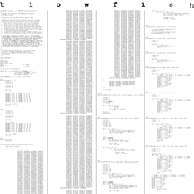
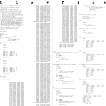

THESE SHIRTS WILL SOON BE AVAILABLE!


THESE SHIRTS CAN BE BOUGHT ON THE WEB! secure order or insecure order.
Front of shirt contains the original OpenBSD "Open the Daemon" picture.
When one of our developers told his mother that he was working on OpenBSD,
she misunderstood and thought he meant BSE -- Bovine Spongiform
Encephalopathy (ie. Mad Cows Disease). The picture on the right resulted...
 

THESE SHIRTS CAN BE BOUGHT ON THE WEB! secure order or insecure order.
Front of shirt contains a picture of the blowfish, and a vague reference to how using the blowfish cipher for the OpenBSD password hash makes our password mechanism more secure. People won't be able to crack your passwords anymore..
Back of shirt contains the complete source code for our the blowfish algorithm (written in Germany).
For more information see our cryptography page...
SOLD OUT: There are no more left. If there is high demand, we may make some again.
These shirts had a OpenBSD-style daemon stitched into the right chest area.

SOLD OUT: There are no more left. More are being made and will probably be available by mid-May.
The wireframe image on the shirt has an incredible feeling texture.
These shirts were sold at
Defcon VI. July 31 - Aug 2, 1998. Las Vegas, Nevada, USA,
LISA '98, December 6-11, 1998. Boston, Massachusetts, and
the Reflections/Projections conference in Urbana, IL, USA.

SOLD OUT: There are no more left. If there is high demand, we may make some again.
These shirts were sold at
Usenix in New Orleans, June 15-19, 1998.